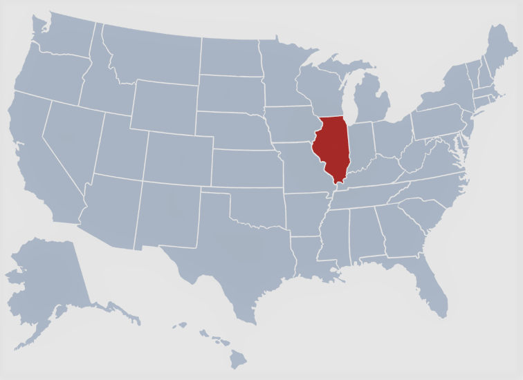
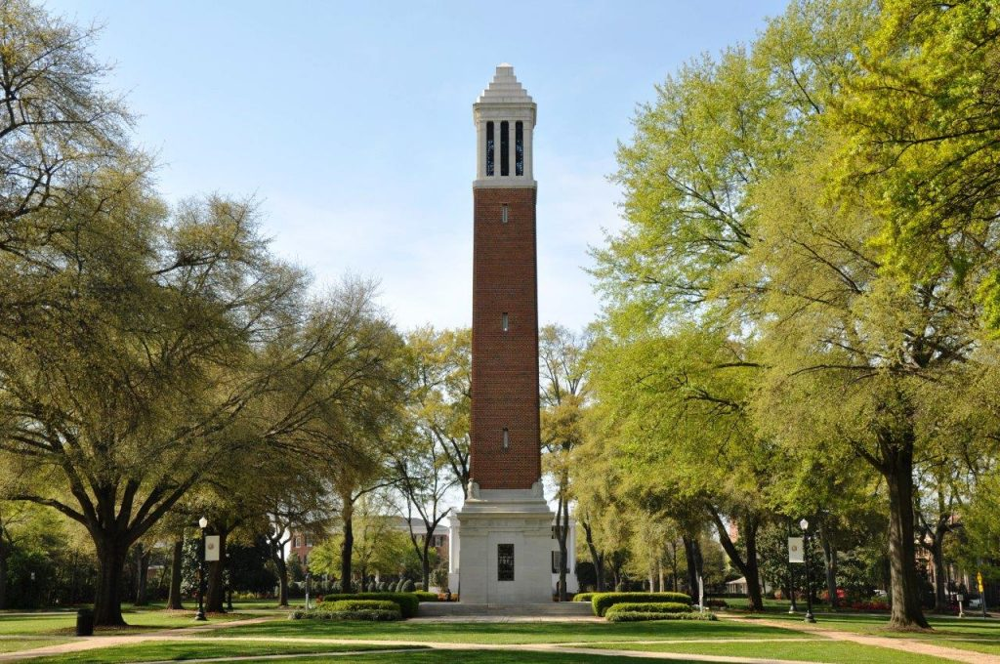

What is StephenPlautz.com?
StephenPlautz.com is a website created, maintained, and updated by me, Stephen Plautz. The purpose of this website is to give readers insight into my personality, creative capabilities, interests, and accomplishments.
About me
Who Am I?
 Hi! My name is Stephen, the creator of this website. There are many different ways to answer this question, so I will default to the basics. I was born in the midwest, Illinois to be exact. Illinois was my home for the first (and longest) 18 years of my life. I am the middle child in a family of seven. I was born with the misfortune of being the third boy in the family. If you can imagine, having two older brothers in the 90's and early 2000's was pretty tough. These days it's all love though. For the entirety of my k-5 through senior Education I was enrolled in a small private school and participated in many extracurriculars ranging from choir to varsity sports. As a kid I never knew what to answer whenever we had vocation day and they asked the inevitable "what do you want to be?". I didn't know what I wanted to do for a living, there were simply too many things I liked (bugs being really high on the list, girls not so much).
 Fortunately this limbo was not to last forever. I first developed my interest in programming during my junior year of high-school. My math teacher had students in our class go through a programming tutorial to make some rudimentary video-games on our TI-84 calculators, and I loved doing it. After experiencing that, I started to notice all kinds of interesting and useful things that I had taken entirely for granted before, and realized that there must have been some really smart, cool, and probably nerdy people that were programming these things.. Exactly my type of crowd. After that, everything else was really about leading up to college, a much needed change of scenery that has presented me with incredible opportunities and challenges. As of right now I am a 21 year old computer-science student at the University of Alabama. So far I have loved every bit of college minus the parking, and perhaps some *cough* English classes *cough*.
Why Did I Make This Website?
 Being a computer-science student with time to spare, and an insatiable apetite for learning, I figured
that I would apply some of that apetite to an area that isn't covered in the core curriculum of most
computer-science programs: web development. This website has proven to be an excellent outlet for
my creative capabilities, and an incredibly fun and rewarding challenge to create. Every piece of
this website is made from scratch, making use of html, css, and javascript; no bootstraps here! While
I recognize the benefit of certain API's and templates to efficiently and stylishly build web pages,
I would be remiss not to take the opportunity to learn web develoment at it's rawest form. Over the
course of the next couple years I plan to update the site to include more functionality that will
both increase the interactivity of the site, as well as presenting me with new and interesting challenges
associated with web devlopment.
Being a computer-science student with time to spare, and an insatiable apetite for learning, I figured
that I would apply some of that apetite to an area that isn't covered in the core curriculum of most
computer-science programs: web development. This website has proven to be an excellent outlet for
my creative capabilities, and an incredibly fun and rewarding challenge to create. Every piece of
this website is made from scratch, making use of html, css, and javascript; no bootstraps here! While
I recognize the benefit of certain API's and templates to efficiently and stylishly build web pages,
I would be remiss not to take the opportunity to learn web develoment at it's rawest form. Over the
course of the next couple years I plan to update the site to include more functionality that will
both increase the interactivity of the site, as well as presenting me with new and interesting challenges
associated with web devlopment.